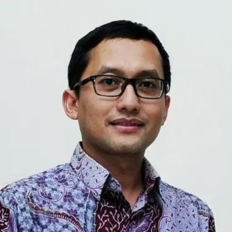
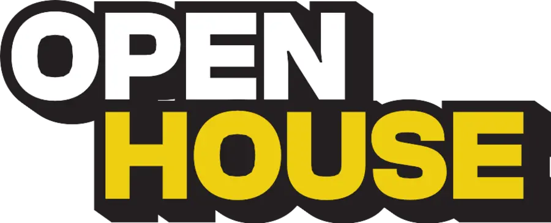
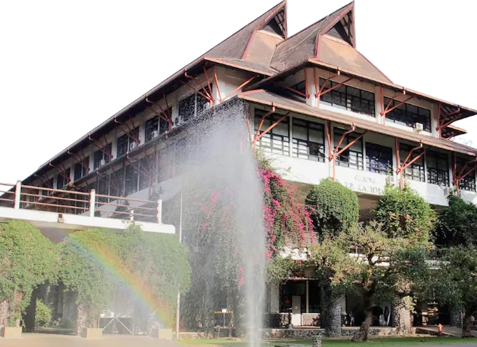

Titah Yudhistira, S.T., M.T., Ph.D
Asisten Ahli — Fakultas Teknologi Industri
Institut Teknologi Bandung

Sesi LIVE 2 jam memahami apa saja yang diperlukan untuk menjadi Data Scientist. Belajar dari Data Scientist berpengalaman dan Akademisi Institut Teknologi Bandung.

Selasa, 15 September 2026
19.00–21.00 WIB LIVE via
In collaboration with Indonesia’s #1 technical university
INSTITUT TEKNOLOGI BANDUNG

Asisten Ahli — Fakultas Teknologi Industri
Institut Teknologi Bandung
Head of Data Science
XLSmart
Understand how data work evolves from describing and explaining what happened to predicting what may happen next, and why this requires a different way of framing problems.
Explore the shift from answering business questions with historical data to building predictive models, including the additional skills needed to frame, build, and evaluate those models.
See why statistical reasoning, uncertainty, validation, and interpretation become even more important when AI can accelerate the process of building models.
Understand the fundamental capabilities needed to make the leap into predictive work, from statistical foundations and modelling to evaluating whether a model is actually trustworthy.
Kamu sudah nyaman dengan SQL, spreadsheet, dan dashboard — tapi mentok di laporan historis dan ingin mulai memprediksi, bukan cuma menjelaskan.
Engineer, aktuaris, peneliti, atau lulusan STEM yang punya dasar kuantitatif kuat dan ingin pindah jalur ke Data Science secara terstruktur.
Kamu pakai AI untuk bantu coding dan analisis, tapi belum tahu cara memvalidasi outputnya dan kapan sebuah model layak dipercaya.